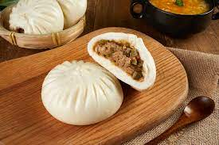
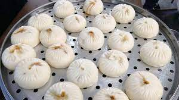
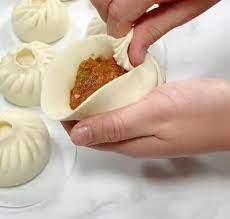
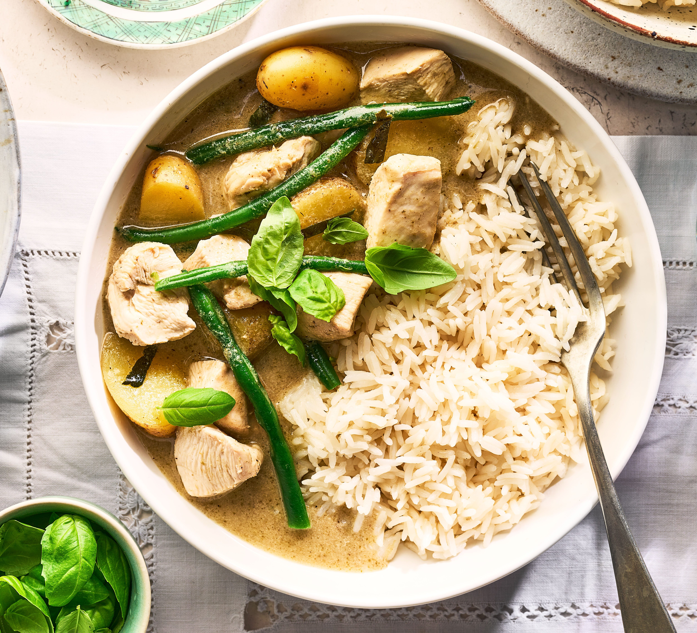
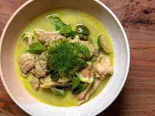
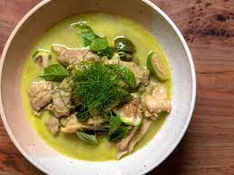

Strawberry Napoleons
Origin: Roman Source: Family Recipe Category: DessertI once ate strawberry Napoleon in a cafe in San Diego, and the taste made me unforgettable, so I found a recipe online to teach myself.
Recipe Ingredients
- Eggs
- Sugar
- Cornstarch
- Milk
- Salted Butter
- Vanilla Extract
- Heavy Whipping Cream
- Powder Sugar
- Puff Pastry Sheets
- Chopped Fresh Strawberries
Recipe Steps
- Add the egg yolks to a medium-sized bowl and gently beat them together. Set the bowl aside.
- Add the sugar, cornstarch and milk to a large saucepan and mix until smooth.
- Cook the sugar mixture over medium-high heat, stirring continuously, until it begins to thicken and bubble.
- Reduce the heat to medium and simmer the mixture for 2 minutes. Remove it from the heat.
- Add a small amount of the milk mixture to the egg yolks and whisk to combine, then add the egg mixture to milk mixture. This process ensures that you do not scramble the egg yolks.
- Place the pan back onto the heat and bring the mixture to a light boil. Allow it to boil for 2 minutes, stirring continuously.
- Remove the mixture from the heat and add in the butter and vanilla extract. Stir until the batter is smooth, then cover it with clear wrap that touches the top of the cream (this helps prevent a film from forming on top). Refrigerate the batter until it is cool and you are ready to use it.
- Remove the two sheets of puff pastry from the box and cut each set into 3 strips, creating 6 strips total.
- Place the pastry strips onto a baking sheet and bake them for about 13 minutes.
- Pipe swirls of the whipped cream on top of the napoleons and top them off with some additional chopped strawberries.
- Refrigerate the napoleons until you are ready to cut and serve them.
Additional Food images

Bun
Origin: China Source: Online Recipe Category: Breakfast My Mom Homemade Buns are the perfect dinner roll for any occasion! Incredibly soft and fluffy, use all purpose or whole wheat flour, make a big batch and freeze for later.
Recipe Ingredients
- 4 cups all-purpose flour
- 2 1/4 teaspoons active dry yeast
- 1 cup warm milk (110°F or 43°C)
- 1/4 cup granulated sugar
- 1/4 cup unsalted butter, melted
- 1 teaspoon salt
- 1 large egg
Recipe Steps
- Activate the yeast: In a small bowl, combine the warm milk and sugar. Sprinkle the yeast over the mixture and let it sit for about 5-10 minutes, or until it becomes frothy.
- Mix the dough: In a large mixing bowl, combine 3 cups of the flour and salt. Pour in the yeast mixture, melted butter, and beaten egg. Mix until it forms a rough dough.
- Cook the sugar Knead the dough: Turn the dough out onto a floured surface and knead it for about 8-10 minutes, adding more flour as needed until the dough is smooth and elastic. You should be able to poke it with your finger, and it should spring back.
- First rise: Place the dough in a greased bowl, cover it with a clean kitchen towel or plastic wrap, and let it rise in a warm, draft-free place for about 1-1.5 hours, or until it has doubled in size.
- Add a small amount of the milk mixture to the egg yolks and whisk to combine, then add the egg mixture to milk mixture. This process ensures that you do not scramble the egg yolks.
Additional Food images
 Green curry
Origin: Thailand Source: Family Recipe Category: Thai Cuisine Thai Green Curry in 30 minutes made by freshening up store bought curry paste OR with a homemade green curry paste! Whichever way you go, the one essential step to make a really great green curry is to fry off the curry paste.
Recipe Ingredients
- Coconut milk
- Chicken or vegetable broth
- Chicken
- Asian (Japanese) Eggplant
- Snow peas
- Fish sauce
- Thai Basil
Recipe Steps
- Heat the vegetable oil in a large pan or wok over medium heat.
- Add the green curry paste to the pan and stir-fry it for a couple of minutes until it becomes fragrant. Be careful not to burn it.
- Add the protein (chicken, beef, shrimp, tofu, or vegetables) to the pan and cook until it's mostly cooked through. If you're using meat, it's important to ensure it's cooked properly.
- Pour in the coconut milk and stir well to combine it with the green curry paste and protein.
- Serve the green curry hot, garnished with Thai basil leaves and red chili slices if you like it spicier.
Additional Food images
 
